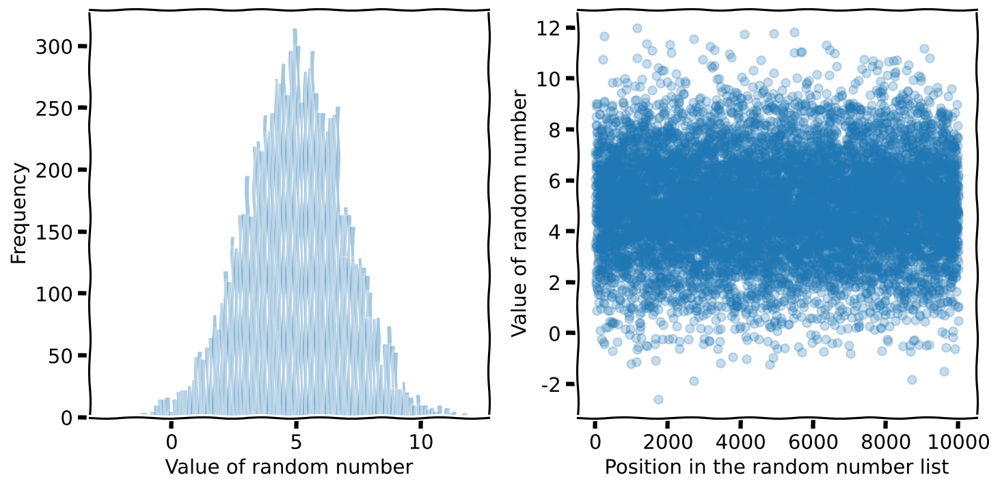
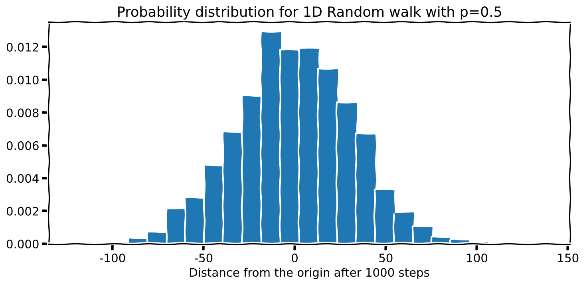
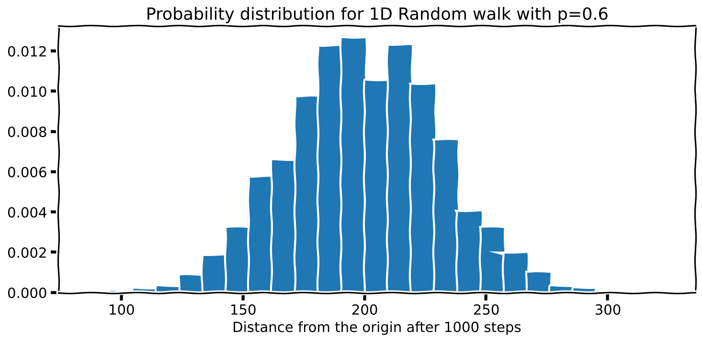
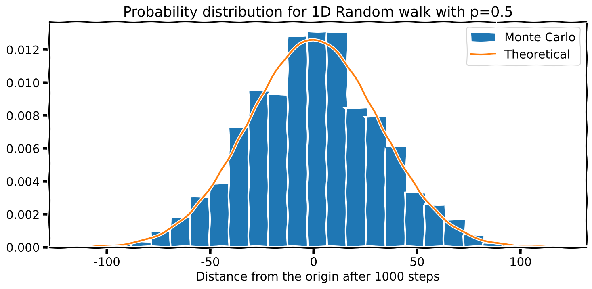
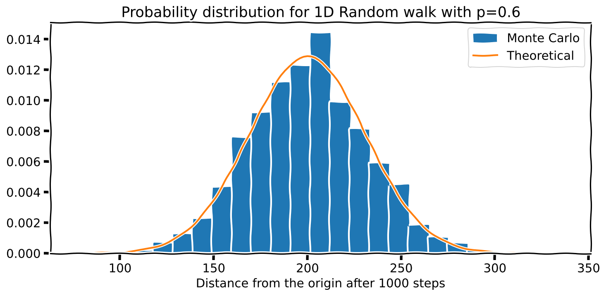

np.random.normal(loc=5, scale=2, size=10)array([6.23467679, 5.69110152, 6.2548526 , 4.91412283, 5.26087859,
6.01631475, 3.54998986, 3.3420698 , 7.65130615, 6.00569723])In this chapter, I will show you how to use random numbers to simulate real experiments. There are many, many examples that I can draw on, but I will keep it ‘simple’ and only talk about Brownian motion and estimating the value of \(\pi\). I will also show you what it means to draw random numbers from a non-uniform distribution.
So far, we have used random numbers that were uniformly distributed. However, there are many instances where we need numbers from other distributions, such as the Normal distribution. Numpy already has functions in place for this. Let me show you how it works. It is also a quick, neat application.

Before we draw random numbers from a Normal distribution (also known as a Gaussian distribution), let’s remind ourselves what the Normal distribution is. With the characteristic shape shown in the plots above (that I borrowed from Wikipedia), the Normal distribution is defined by two parameters. The mean \(\mu\) and the standard deviation \(\sigma\). The mean decides the centre’s location and the standard deviation decides the chubbiness. A feature of the Normal distribution (as indicated in the image above) is that 68% of the points lie between \(\mu\pm\sigma\). The mathematical form of this distribution is:
\[ f(x)=\dfrac{1}{\sigma \sqrt{2\pi}}{\large e}^{-\dfrac{1}{2}\left(\dfrac{x-\mu}{\sigma}\right)^2} \]
The function we need to draw normal random samples is np.random.normal(loc=, scale=, size=). loc is used to specify the mean and scale the standard deviation. For example:
np.random.normal(loc=5, scale=2, size=10)array([6.23467679, 5.69110152, 6.2548526 , 4.91412283, 5.26087859,
6.01631475, 3.54998986, 3.3420698 , 7.65130615, 6.00569723])It isn’t easy to see that the above numbers are from a Normal distribution. However, it is easier if we plot the data, as we did before.

n = 1_000_0
random_numbers = np.random.normal(loc=5, scale=2, size=n)
fig, ax = plt.subplots(nrows=1, ncols=2)
axis = ax[0]
axis.hist(random_numbers, bins=100, alpha=.25)
axis.set_xlabel("Value of random number")
axis.set_ylabel("Frequency")
axis = ax[1]
axis.scatter(range(n), random_numbers, alpha=.25)
axis.set_xlabel("Position in the random number list")
axis.set_ylabel("Value of random number")I hope this visualisation will help you understand what I meant by drawing a number from a Normal distribution.
Let’s check if the Normal random numbers given to us satisfy the 68% condition?
n = 10_000
mean, sd = 5, 2
random_numbers = np.random.normal(loc=mean, scale=sd, size=n)
mask = (random_numbers >= mean - sd) & (random_numbers <= mean + sd)
print(f'% of points between 1 std.dev. from the mean: {np.sum(mask)/n*100:.2f}%')% of points between 1 std.dev. from the mean: 68.43%Let’s simulate a simple random walk1 in 1D. The scenario is such that a particle is restricted to moving in 1D (i.e. only along a line). It moves in steps, either one unit to the left or one to the right. The choice of left or right is selected randomly. Let’s take the probability of going right as \(p\), and going left is \(q\) (\(=1-p\)).
I can encapsulate the above information as a function as follows:
def brown_1d(prob_right=.5, no_of_steps=10000):
'''
This function returns the final position of the particle
after the number of steps.
prob_right is the probability of going right.
'''
step_size = 1
x = 0 # starting x position
for _ in range(no_of_steps):
if rnd.random() < prob_right: # Go right?
x += step_size
else:
x -= step_size
return xBefore going ahead, I am tired of having to type np.random.! Time to get lazy by:
import numpy.random as rndNow I can just use rnd! So, back to the main story…
Each time I run this function, I will get a different value. However, I like to see if there is a pattern. Let me repeat an experiment of 1000 steps 10,000 times to see what I get.
no_of_steps, p = 1_000, .5
repeats = 10_000
results = [brown_1d(prob_right=p, no_of_steps=no_of_steps)
for _ in range(repeats)]
plt.hist(results, bins=25, density=True)
plt.xlabel(f'Distance from the origin after {no_of_steps} steps')
plt.title(f'Probability distribution for 1D Random walk with p={p}')Note that I have put density=True to ask Matplotlib to normalise the area under the curve to 1.

Interesting; the distribution looks familiar since \(p=.5\) is symmetrical about the starting position. I am curious to see what happens if I increase the probability \(p\) to 0.6. Then, the curve should shift to the right. Let’s see if this happens. I will not show the code because it is the same as above.

A theoretical analysis of 1D random walks predicts that the distribution of positions should have a mean of \(N(p - q)\) and a standard deviation of \(\sqrt{4N pq}\) (where \(N\) is the total number of steps). The distribution is actually Binomial, but since we have a large number of steps, it approximates a Gaussian. So, let’s overlay a Normal distribution over our previous plots to see how well our simulation agrees with the theory.
Here is the function I used for the Normal distribution, which is the equation I showed you earlier.
def normal(x, m=0, s=1):
'''
Probability density function for the
Gaussian distribution.
'''
s2 = s**2
output = np.exp(-(x-m)**2/(2*s2))
output /= np.sqrt(2*np.pi*s2)
return outputI can use the following code to overlay this on my histogram:
prob_left = 1 - prob_right # q = 1 -p
mean = no_of_steps * (prob_right - prob_left) # mean = N(p - q)
sd = np.sqrt(4*no_of_steps*prob_right*prob_left) # sd = sqrt(4 N p q)
x = np.unique(results) # Numbers that form
# the x-axis
plt.plot(x, normal(x, mean, sd), label='Theoretical')Here is what I got.
 
Neat!
By the way, techniques such as the above that involve random numbers are called Monte Carlo methods. This is because random numbers are associated with gambling, and the city of Monte Carlo is famous for the latter.
I will now show you a way to estimate the value of \(\pi\) by using random numbers to simulate an old experiment.

Consider a circle inscribed on a square surface, as shown above. Let’s take the radius of the circle to be 1. Then, if we throw a large number (\(N_{total}\)) of grains of sand randomly onto this surface, the number of grains landing on the green, the circular area will be related to the number on the total area by:
\[ \begin{align*}\frac{N_{green}}{N_{total}}\approx \frac{\text{Area of green region}}{\text{Area of square}} \end{align*} \]
But we know the formulae for the areas! So,
\[ \begin{align*} \frac{\text{Area of green region}}{\text{Area of square}}&= \frac{\pi (1)^2}{2\times 2}=\frac{1}{4}\pi \quad\Rightarrow \quad\pi = 4\left(\frac{\text{Area of green region}}{\text{Area of square}}\right) \end{align*} \]
\[ \text{i.e.}\qquad\pi \approx 4\left(\frac{N_{green}}{N_{total}}\right) \]
We can simulate this experiment by randomly ‘creating’ points (to represent where a grain of sand will land) by using NumPy’s PRNG. We can then decide if this grain of sand is inside or outside to get \(N_{green}\) and then go on to get an estimate for \(\pi\)!
Let me start with a (poor) but intuitive solution by throwing one grain at a time.
N_total = 100_000 # Yes, Python allows the _
N_green = 0
for _ in range(N_total):
x = rnd.uniform(low=-1, high=1, size=1)
y = rnd.uniform(low=-1, high=1, size=1)
r = np.sqrt(x**2 + y**2) # Distance from the origin
if r <= 1:
N_green += 1 # In or out of the circle
4 * N_green / N_total # Estimate for pi3.13552This solution is slow because of the way we are drawing out the random number, one at a time
Here is a better solution that generates multiple random numbers at once.
N_total=1_000_000
x=rnd.uniform(low=-1, high=1, size=N_total)
y=rnd.uniform(low=-1, high=1, size=N_total)
N_green= np.sum((x**2+y**2) <= 1) # Oh! the ease of NumPy!
4 * (N_green / N_total)3.145332There is room to improve our algorithm. Notice that if we limit our experiment to only the first quadrant of the circle and the related square, our equation remains the same!
\[\begin{align*} \frac{\text{Area of green region}}{\text{Area of square}}&= \frac{\pi (1)^2\color{darkorange}{/4}}{2\times 2\color{darkorange}{/4}}=\frac{1}{4}\pi \quad\Rightarrow \quad\pi = 4\left(\frac{\text{Area of green region}}{\text{Area of square}}\right) \end{align*}\]
However, the range for \(x\) and \(y\) becomes \([0,1)\). So, our statistics have improved drastically! We can now use the faster, simpler rand().
N_total=1_000_000
x=rnd.rand(N_total)
y=rnd.rand(N_total)
N_green=np.sum((x**2+y**2) <= 1)
4 * (N_green / N_total)3.140268